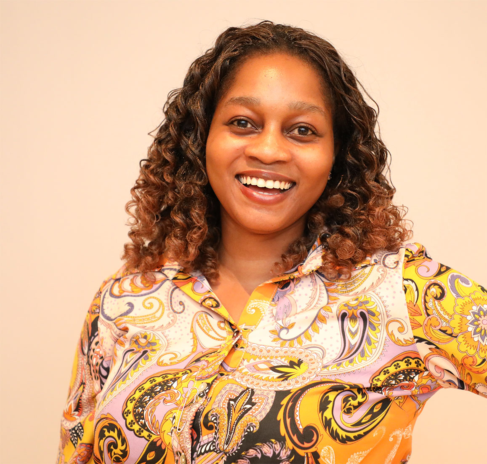
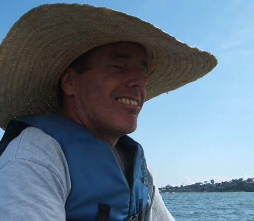
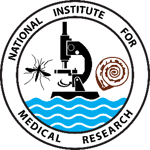

AMS Network Partners & IBS Tanzania
November 10-14, 2025. Adden Palace Hotel, Mwanza
Integrating HIV/AIDS and cancer research
Integrating HIV/AIDS and cancer research
| Home | Application | Programme | Facilitators | Directions | Download |
🧠 Critically formulate public health research questions using cancer and HIV/AIDS data.
📊 Use statistical and machine learning methods for data linkage, processing and documentation using R and Python.
📈 Apply survival analysis techniques for analysing cancer and HIV/AIDS data.
🔗 Jointly model longitudinal and time-to-event outcomes.
🧩 Handle missing data using a robust multiple imputation framework.
💻 Acquire essential skills for reproducible research using R Markdown & version control (Git).
🌐 Engage in professional networking with peers, national & international experts.
We warmly welcome passionate researchers (just like us!) with a background in statistics or data science to advance their skills in data linkage, documentation, standardisation, and electronic health record analysis To fully benefit from the workshop, participants should bring personal laptops with the required software pre-installed, as detailed in the Download section. To register for Workshop 2, visit registration page.💰 Registration fee: TZS 300,000/- (covers breakfast and lunch)
📅 Registration deadline: October 17, 2025
✉️ Contact: imboya@aaph.or.tz
We’re thrilled to welcome our two invited speakers — Dr. Justine Nasejje and Dr. Edmund Njeru Njagi — who bring exceptional global expertise in HIV/AIDS and cancer data analysis to our workshop. We’re excited to announce that we’ll also host the AMS Network Partners and IBS Tanzania Extended Network Special Event on Data Linkage at Malaika Beach Resort, Mwanza, on 12th November 2025. This event offers an exceptional platform for participants to showcase their research, gain visibility, and connect with IBS Tanzania platform. If interested, you’re invited to submit an abstract and register via the CUHAS Portal. The deadline is 12th October 2025. For any questions please contact ola.jahanpour@gmail.com.

|

|

|
|  |  |
|
|

|
|

|
 |

|